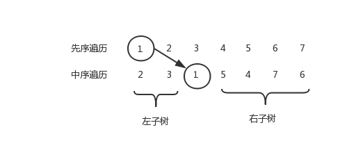
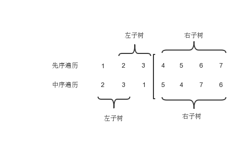
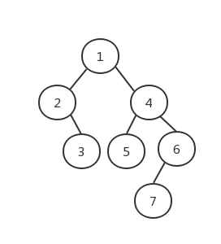

二叉树的遍历
- 先序(先根)遍历：即先访问根节点，再访问左子树和右子树
- 中序遍历：先访问左子树，再访问根节点，再访问右子树
- 后序遍历：先访问左子树和右子树，再访问根节点
- 层次遍历：按照所在层数，自顶向下遍历
注：其中层次遍历需要借助队列
假设有以下数据结构
1
2
3
4
| struct node{
struct node *left,*right;
int value;
}
|
那么它的先序遍历伪代码为
1
2
3
| printf("%d",root->value);
pre_order(root->left);
pre_order(root->right);
|
二叉树的前序中序转后序遍历
首先需要了解的是，由中序和另外任一种遍历可以唯一确定一颗二叉树，而仅有前序遍历和后序遍历无法确定一颗唯一的二叉树。
例如我们已知二叉树
前序遍历为：1 2 3 4 5 6 7
中序遍历为：2 3 1 5 4 7 6
要想推出后序遍历可以先由已知的遍历顺序还原二叉树，再运用后序遍历算法得到后序序列。
那么如何还原二叉树呢？
由先序遍历的性质我们可以知道对于每一颗二叉树，先序遍历的第一结点为根结点。因此，从先序遍历找到根结点后，在中序遍历中找到它的位置，以根结点为分界线，左边的为左子树，右边的是右子树。这样递归下去就可以得到原二叉树了。
下面用图解释一下：

因此首先找到根节点在中序遍历中的位置。
可以看出来以根节点作为分界线右边为右子树，因此直接递归即可，而左边则由于右根节点需要分解。

先序遍历中，递归从根节点后一个结点开始，而结束结点为开始节点加上左子树结点的个数，而左子树结点的个数可以由中序遍历根节点左边的个数确定。
最后得到如下二叉树

给出二叉树前序，中序转后序、层次的代码
1
2
3
4
5
6
7
8
9
10
11
12
13
14
15
16
17
18
19
20
21
22
23
24
25
26
27
28
29
30
31
32
33
34
35
36
37
38
39
40
41
42
43
44
45
46
47
48
49
50
51
52
53
54
55
56
57
58
59
60
61
62
63
64
65
| #include<iostream>
#include<vector>
using namespace std;
vector<int> pre_order,mid_order;
typedef struct node{
struct node *left,*right;
int value;
}Tree;
Tree* convert(int pre_l, int pre_r, int mid_l, int mid_r){
Tree *root = new Tree;
if(pre_l > pre_r) return NULL;
root->value = pre_order[pre_l]; //先序遍历的第一个结点为根节点
if(pre_l == pre_r){
root->left = NULL;
root->right = NULL;
return root;
}
int index = mid_l;
for(; index <= mid_r; index++){ //在中序遍历中找这一轮的根节点
if(mid_order[index] == pre_order[pre_l]) break;
}
root->left = convert(pre_l + 1, pre_l + (index - mid_l), mid_l, index - 1); //递归建立左子树
root->right = convert(pre_l + (index - mid_l) + 1, pre_r, index + 1, mid_r); //递归建立右子树
return root;
}
void post(Tree *root){ //后序遍历
if(root != NULL){
post(root->left);
post(root->right);
cout << root->value << " ";
}
}
void level(Tree *root,int n){ //层次遍历
Tree *s[n];
int index = 0, point = 1;
s[0] = root;
while(index != n){
if(s[index]->left != NULL){
s[point] = s[index]->left;
point++;
}
if(s[index]->right != NULL){
s[point] = s[index]->right;
point++;
}
cout << s[index]->value << " ";
index++;
}
}
int main(){
cout << "输入结点个数" << endl;
int n; cin >> n;
pre_order.resize(n), mid_order.resize(n);
cout << "输入前序遍历序列" << endl;
for(int i = 0; i < n; i++) cin >> pre_order[i];
cout << "输入中序遍历序列" << endl;
for(int i = 0; i < n; i++) cin >> mid_order[i];
Tree *root = convert(0, n-1, 0, n-1);
cout << "后序遍历为：" << endl;
post(root);
cout << endl << "后层次遍历为：" << endl; ;
level(root,n);
return 0;
}
|
再看一下两行核心代码
1
2
| root->left = convert(pre_l + 1, pre_l + (index - mid_l), mid_l, index - 1); //递归建立左子树
root->right = convert(pre_l + (index - mid_l) + 1, pre_r, index + 1, mid_r); //递归建立右子树
|
前序遍历中 (pre_r - (pre_l + (index - mid_l) + 1)) + (pre_l + (index - mid_l) - (pre_l + 1 )) = pre_r - pre_l - 1
即去掉了pre_l这个位置的值，即根结点
中序遍历中 (index - 1 - mid_l) + (mid_r - (index + 1)) = mid_r - mid_l - 1
即去掉了index位置的值，即根结点。
因此可以直接由前序和中序遍历得到后序遍历而无须建二叉树。
1
2
3
4
5
6
7
8
9
10
11
12
13
14
15
16
17
18
19
20
21
22
23
24
25
| #include<iostream>
#include<vector>
using namespace std;
vector<int> pre_order,mid_order;
void convert(int pre_l, int pre_r, int mid_l, int mid_r){
if(pre_l > pre_r) return ;
int index = mid_l;
for(; index <= mid_r; index++){
if(mid_order[index] == pre_order[pre_l]) break;
}
convert(pre_l+1, pre_l + (index - mid_l), mid_l, index - 1);
convert(pre_l + (index - mid_l) + 1, pre_r, index + 1, mid_r);
cout << mid_order[index] << " ";
}
int main(){
cout << "输入结点个数" << endl;
int n; cin >> n;
pre_order.resize(n), mid_order.resize(n);
cout << "输入前序遍历序列" << endl;
for(int i = 0; i < n; i++) cin >> pre_order[i];
cout << "输入中序遍历序列" << endl;
for(int i = 0; i < n; i++) cin >> mid_order[i];
convert(0,n-1,0,n-1);
return 0;
}
|
后序中序转前序也是相同的方法，还有类似的已知完全二叉树的层次遍历求前中后序。
这类问题的关键都是找根节点。